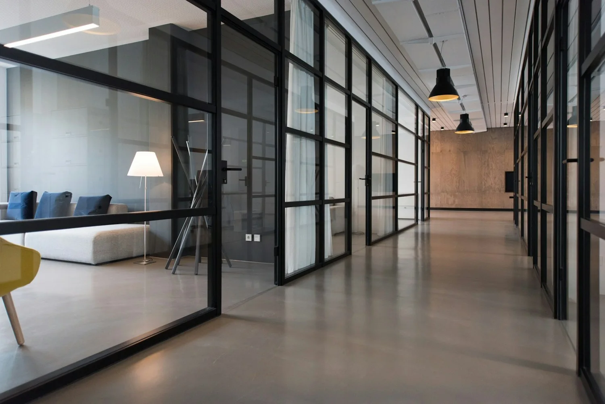

Personel ve bakım hizmetleri
İş yerinizin ritmi
kesilmesin.
İnsan, mekân ve günlük işler için ortak bir çalışma planı. Personel desteğinden bakım takibine, ihtiyacınıza göre şekillenir.
Hizmet alanları
Bir iş yerinin günlük ihtiyaçları.
Personel desteği
Görev alanını, çalışma düzenini ve beklenen ekip desteğini birlikte tarif edin.
Bakım koordinasyonu
Bakım ihtiyaçlarını önceliklendirin, uygulama zamanını ve sorumlulukları netleştirin.
Operasyon takibi
Açık işleri, teslim adımlarını ve bir sonraki kontrolü tek bir plan üzerinde izleyin.

Çalışma biçimimiz
Önce ihtiyacı dinleriz.
Hangi iş, hangi alanda ve ne sıklıkta yapılacak? Planı bu üç soruyla kurarız.
Süreci incele